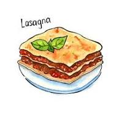

Lasagna

Description
Lasagna is a layered Italian pasta dish made with sheets of lasagna noodles, a rich meat and tomato sauce (ragù), creamy béchamel sauce, and grated cheese, all baked until golden and bubbling.
Ingredients
- Lasagna noodles
- Ground beef
- Tomato sauce
- Bechamel sauce
- Grated mozzarella or parmesan
- Onion
- Garlic
- Olive oil
Steps
- Preheat the oven to 180°C (350°F).
- Cook lasagna noodles according to package instructions.
- Sauté onion and garlic in olive oil, then add ground beef and cook until browned.
- Add tomato sauce to the meat and let it simmer for 15–20 minutes.
- In a baking dish, layer noodles, meat sauce, béchamel sauce, and cheese.
- Repeat layers and finish with cheese on top.
- Bake for 30–40 minutes until golden and bubbling.
- Let it rest for 10 minutes before serving.
Home